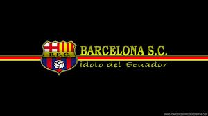

El inicio de la historia del Barcelona Sporting Club se remonta al 1 de mayo de 1925,1 por un grupo de jóvenes ecuatorianos, conocidos como "La Gallada de la Modelo", y la ayuda de los españoles y el hecho se dio en la casa del catalán Eutimio Pérez ubicada en la intersección de las calles Concordia e Independencia (actualmente, Eloy Alfaro y Francisco de Marcos) y se eligió al ecuatoriano Carlos García Ríos
como el primer presidente de la joven institución, y también se designó al catalán Onofre Castells como presidente honorario. El club fue afiliado a la Federación Deportiva del Guayas el 1 de junio 1925, participando en el Campeonato de Amateur del Guayas. Actualmente se desempeña en la Campeonato Ecuatoriano de Fútbol, de la cual nunca ha descendido. Disputa sus encuentros de local en el Estadio Estadio Banco Pichincha,
que posee una capacidad para 90.000 espectadores, siendo el estadio de fútbol de mayor capacidad en el Ecuador y uno de los más grandes de Sudamérica.Hasta la fecha es el equipo más laureado en el Ecuador, con 14 títulos nacionales,4 y a nivel internacional su máximo logro son los subcampeonatos de la Copa Libertadores de América en 19905 y 1998.
Con 32 participaciones internacionales en torneos oficiales organizados por la Confederación Sudamericana de Fútbol, Barcelona es el conjunto ecuatoriano que más copas continentales ha disputado. Además una gran cantidad de futbolistas del club han sido seleccionados para representar al Ecuador en algún evento internacional,particularmente en sus mayores logros, fueron para las Eliminatorias al Mundial Inglaterra 1966.
El fútbol fue desde los comienzos la esencia misma del club, y aunque posteriormente el crecimiento de la institución promovió el desarrollo de otras actividades como el baloncesto, béisbol, boxeo, regatas, natación, fútbol sala, y bolos; aquel permaneció como la disciplina deportiva sobre la cual se sustenta la entidad y la que le valió su reconocimiento a nivel nacional e internacional.
En el 2008, su sección de baloncesto quedó campeón en la Liga Nacional de Básquet 2008 de Ecuador.
El equipo con el cual posee mayor rivalidad deportiva es el Club Sport Emelec, también de la ciudad de Guayaquil. Estos dos equipos son partícipes del Clásico del Astillero, el partido más importante de Ecuador, ya que concentra la mayor parte de los aficionados al fútbol en todo el Ecuador. La historia del Barcelona se divide en cinco períodos: la época amateur hasta 1948, La Victoria a Millonarios, La Hazaña de la Plata, Las 2 Finales de Libertadores y la actual.
Algunos de los jugadores más importantes que pasaron por sus filas fueron Enrique Cantos, Alberto Spencer, Luciano Macias, Washington Muñoz, Carlos Caszely, Severino Vasconcelos, Hólger Quiñónez, Carlos Luis Morales, José Francisco Cevallos, Rubén Insúa, Marcelo Trobbiani, Mario Saralegui, Carlos Alfaro Moreno, Anthony de Ávila, entre otros grandes.